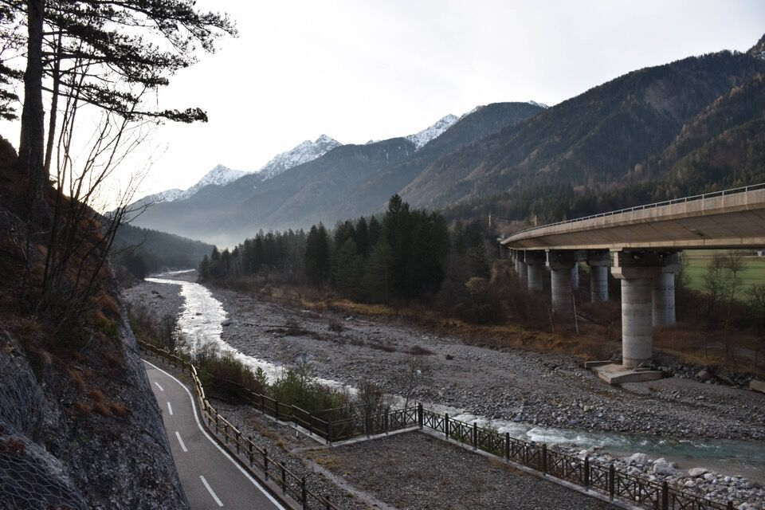
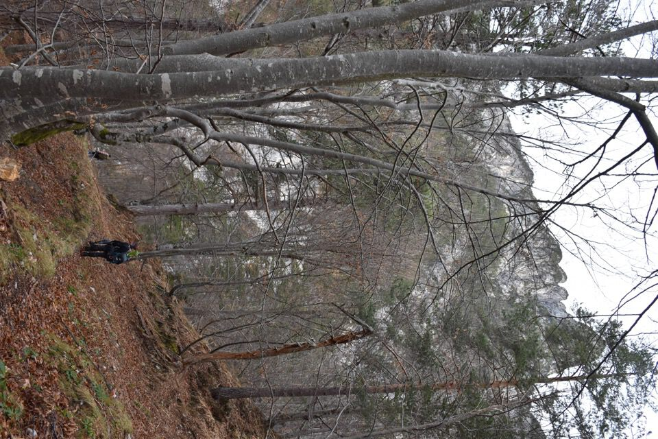
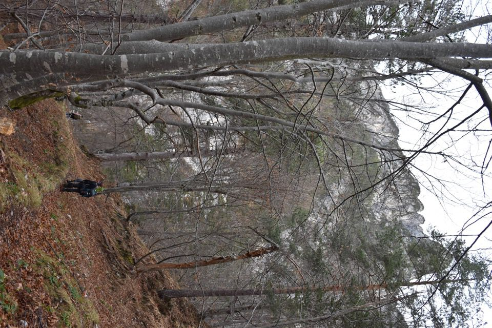
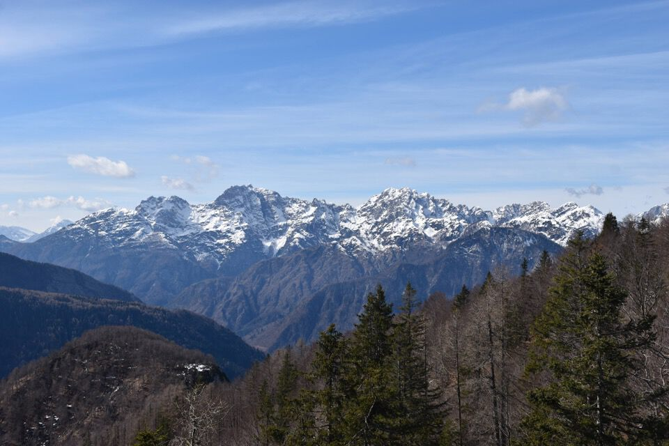
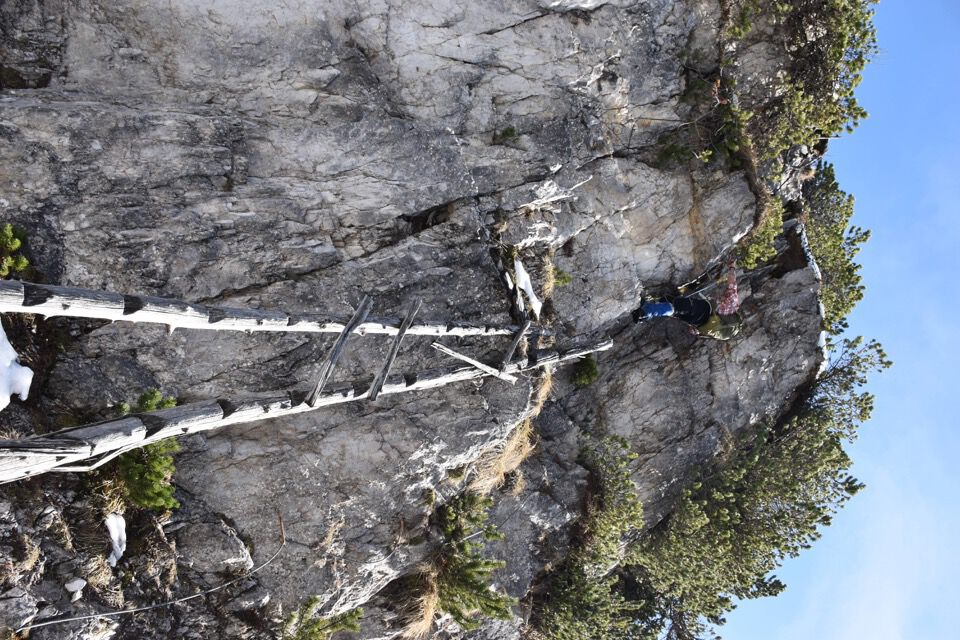
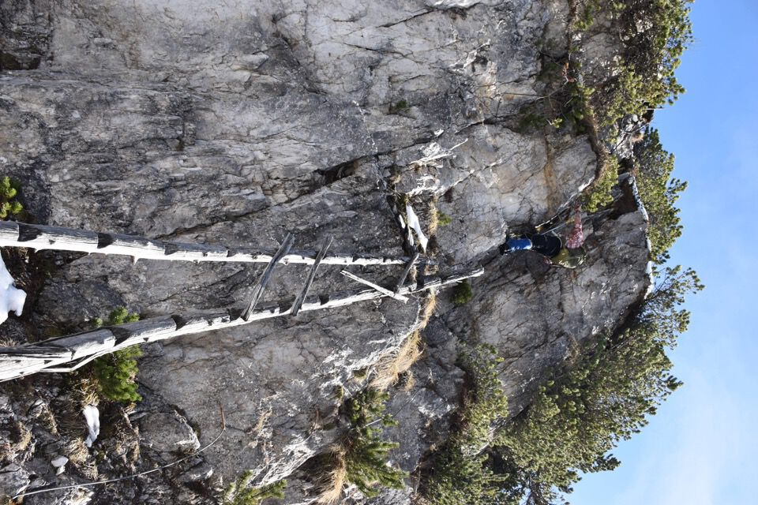

Dopo la gita lungo il sentiero dei boscaioli di val Tralba, a forza di parlare di stue mi ero appassionato alla questione (sulla quale c'è un ottimo ed interessantissimo libretto: Alessandro Simonetti, L’antica tecnica della fluitazione del legname mediante l’utilizzo di chiuse. Le "stuis di Tralbe").
Naturale quindi che mi venisse voglia di andare a visitare lo stuetto del monte Scinàuz, percorso relazionato in Trois Neris; per rendere l'uscita più completa abbiamo deciso di abbinargli il monte Torre, sentinella dello Scinàuz.
Partiamo da San Leopoldo in val Canale.
La forra iniziale del rio Scinàuz, vista dalla ciclabile Alpe-Adria.
Il sentiero che rimonta la Plania è davvero bello e ben tenuto, forse grazie a quei pazzi dei torrentisti che scendono per il rio Scinàuz.

Laggiù la mèta finale: già che c'ero ho buttato un occhio e fotografato le orride pareti Sud dello Scinàuz. Come dice il Gaberscik, meglio limitarsi a guardarle...
Zero neve? Siamo a cavallo! (Non andrà proprio così)
Lassù la stazione di arrivo della funivia dello Scinàuz.

L'ampia e friabile parete Sud dello Scinàuz: impressionante.

 

Bellissimo il passaggio sul greto del rio Scinàuz, qui inaspettatamente largo.

Ahimé manchiamo, o meglio superiamo, il luogo dove si trovano i resti dello stuetto! Che peccato! Motivo per tornare...
Arriviamo sul M. Cit di Dentro senza mai intersecare il CAI 523, che percorreremo in discesa.

La vista si apre sui monti di Pramollo: la Creta di Pricot e il monte Cerchio.

Ecco la facile cresta che dobbiamo percorrere.
La giornata è straordinaria ed è difficile dimenticare la gioia che mi riempiva l'animo alla vista di tali panorami con un cielo così azzurro.
Bellissimo l'asutero versante Nord del Cozarèl e del Çuc dal Bôr.


Ecco il monte Torre, mugoso a dx, con la ben più grossa mole dello Scinàuz.
Sembra attaccato ma...

...c'è un bel salto in mezzo.

Se non fosse attrezzato sarebbe dura: è più impegnativo di quello che sembra.
Notare la vecchia scaletta di legno!
 

La faccenda è piuttosto impegnativa: condizioni assolutamente invernali a Nord (e che ti aspettavi?), ma la grande esperienza di Bruno ci ha permesso di avanzare.
Una faticaccia mostruosa che difficilmente dimenticheremo! Ma ecco il candido pendio intoso che porta alla vetta.


Immenso e intrigante lo Scinàuz visto da qui. Ci sono così tante cose che si potrebbero tentare...
Bellissima la conca di Studena.
Laggiù la Puartate.
È ora di scendere.


La situazione dei sentieri per il monte Cit è un disastro: fra sentieri CAI segnati sulle mappe ma che non esistono e sentieri non segnati, non ci si capisce un accidente. Una zona completamente disastrata dagli schianti non aiuta di certo. Se non erro, dopo aver visto questo sfacello siamo saliti in cima al monte Cit di Fuori, e poi abbiamo preso la traccia nera che scende per la dorsale (anche se in realtà ci si trovano sporadici segni CAI!)

Dalla cresta Nord del monte Cit di Fuori troviamo un bellissimo pulpito verso il monte Cerchio: proprio una bella foto.
Qui invece si vede tutta la dorsale percorsa.

Un breve traverso richiede attenzione.

L'ultima parte del CAI 523, peraltro davvero ripida, è assolutamente sorprendente per l'ingegno col quale supera le asperità del friabilissimo pendio basale.